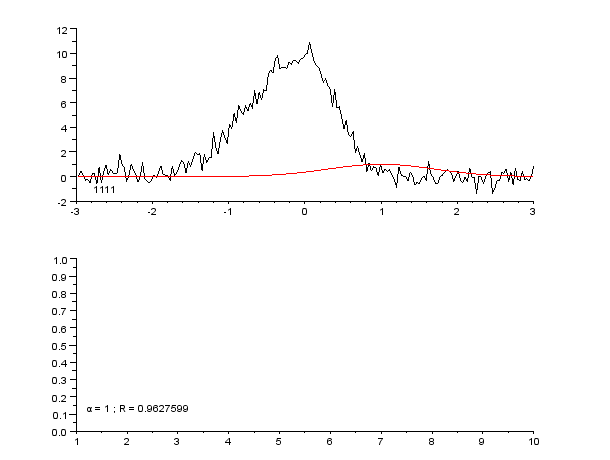
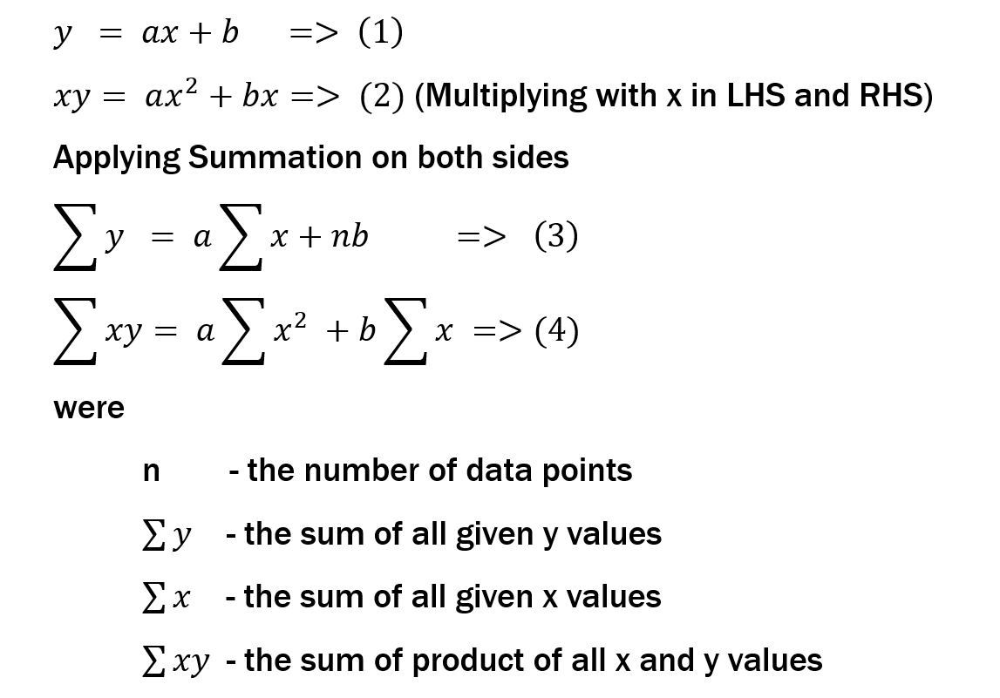
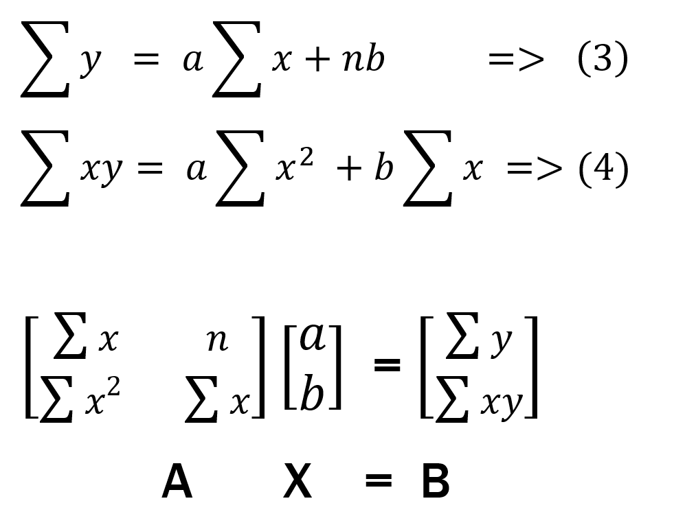
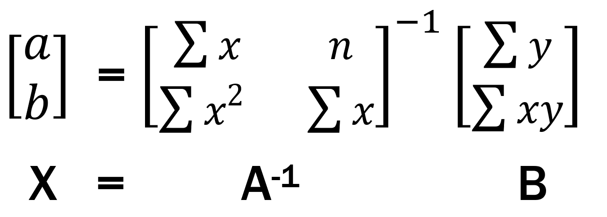
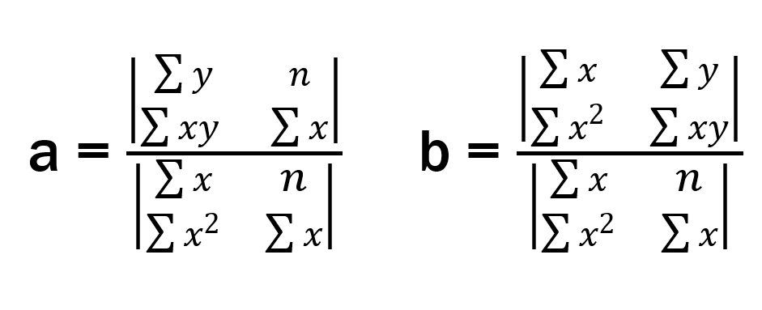

In any Mechine Learning Problem we need to go through some steps
they are
Data Collection
Data Visualization
Filtering Useful Data
Selecting Optimal Algoritham
Mapping Data
Training with Data
Let's see each in detail
1) Data Collection
For data Collection we used the historical data of Dogie Coin from here
The data included
Highest value in $ obtained for Dogie Coin at a given date
Lowest value in $ obtained for Dogie Coin at a given date
Opening value in $ obtained for Dogie Coin at a given date
Closing value in $ obtained for Dogie Coin at a given date
With the help of JavaScript we collected the data from 2013 Dec 15 to 2022 Feb 23 and stored it dateset.json
2) Data Visualization
"The Purpose of Computation is insight, not numbers"
-Richard Hamming
With the help of chart.js we plotted High , Low , Opening and Closing values agaist dates.
From the plots we reached the following concultion
As we know for any crypto currencies initial values will be constant for a long time.
This trend can be obsvered in Dogie coin data too, From 2013 Dec 15 to Dec 19 2020 the values were almost constent.(1)
From Feb 1 2021 to Dec 17 2021 The data shows series irregularities that include a all time high values (2)
From Dec 17 2021 to Feb 23 2022 The data is consistant (3)
NOTE:The numbers in brackets are for reffering the plots in analytics
for example (1) indicates the high_1 ,low_1 etc plots in analytics
3) Filtering Useful Data
From the Data Visualization we got an optimal dataset that is data from Dec 17 2021 to Feb 23 2022
4) Selecting Optimal Algoritham
Since the values are in numbers we can use regression, And for regression of these datasets we can use curve fitting as the plot matches a curve
4.1) Curve Fitting
Curve fitting is the process of constructing a curve, or mathematical function, that has the best fit to a series of data points, possibly subject to constraints. Curve fitting can involve either interpolation, where an exact fit to the data is required, or smoothing, in which a "smooth" function is constructed that approximately fits the data. A related topic is regression analysis, which focuses more on questions of statistical inference such as how much uncertainty is present in a curve that is fit to data observed with random errors. Fitted curves can be used as an aid for data visualization,to infer values of a function where no data are available, and to summarize the relationships among two or more variables.Extrapolation refers to the use of a fitted curve beyond the range of the observed data,and is subject to a degree of uncertainty since it may reflect the method used to construct the curve as much as it reflects the observed data.

As seen from the animation we can see that if we get the optimal values of the curve coefficients we will get a best approximation of the curve that could fit most of our data points
A first order equation has 2 coefficients and b
A second order equation will have 3 coefficients a, b and c
In genaral an nth order curve has n+1 coefficients
Our goal is to find these n+1 coefficients
4.2) Least Squares Method
Least squares is a method to find the equations needed to solve a curve fitting Problem
We know that to solve a nth order equation we need an n equations.
With help of least squares method we will find n equations and solve it and hence find the n+1 coefficients of the nth order curve
Lets see an example
For a 1st order equation the eqaution will be

After the above oprations we are left with 2 equations (3) and (4)
With these eqautions we can solve for a and b with the matrix method
4.3) Matrix Method
We can represent equation (3) and (4) with matrixes like shown below

As we know we can find the values of matrix [a,b] with the following method

But as we know this method has a Problem, it involves the inverse of a matrix. To find that is a complex task and the algorithams takes lot of time to exicute
Thats when we get the opportunity to thank Gabriel Cramer for making our lifes simple
4.4) Crammers Rule
In linear algebra, Cramer's rule is an explicit formula for the solution of a system of linear equations with as many equations as unknowns, valid whenever the system has a unique solution. It expresses the solution in terms of the determinants of the (square) coefficient matrix and of matrices obtained from it by replacing one column by the column vector of right-hand-sides of the equations. It is named after Gabriel Cramer (1704–1752), who published the rule for an arbitrary number of unknowns in 1750,although Colin Maclaurin also published special cases of the rule in 1748 (and possibly knew of it as early as 1729).
It has recently been shown that Cramer's rule can be implemented in O(n3) time, which is comparable to more common methods of solving systems of linear equations, such as Gaussian elimination (consistently requiring 2.5 times as many arithmetic operations for all matrix sizes), while exhibiting comparable numeric stability in most cases.
Lets see how we do it in the Cramer's way
By Cramer's rule a and b can be found using the following eqautions

By looking at the equations we can see that the numrator part of equation for a is the determinant of matrix that is formed with first colum matrix A replaced by matrix B and for b is the determinant of matrix that is formed with second colum matrix A replaced by matrix B
By this method we can solve nth order curves with n+1 coefficients
But there is another problem, I swear this is the last and final problem
Conventional method of finding determinant of a matrix has a very high time complexity. So we first convert the matrix to a upper triagular matix and find the product of its diagonal elements (as we know for a upper triagular matrix the determinant is the product of its diagonal elements by the properties of determinants)
5) Mapping Data
As we are using regression , we need both the input and out as numbers so ,we need to convert the dates to numbers
What we did we substrated 2001 from year part and counded the number of dates till that date and multiplied by 0.001 and added
for example
date = 12 March 2021
2021 = 2021-2001 = 20
2021 is not not a leap year so Feb has 28 days
So number of days till March 12
days = 31 + 28 + 12 = 71
days * 0.001 = 0.071
coded days = 20.071
In Analytics (3) we can see Int and Float data
We mapped the decimal values by multpying it with the exponent that gives a number greater tahn 0 when we multiply it with lowest values in an array
and this value is splitted into into intigers and floats and each is plotted as _int and _float. This increses the accuracy as we can see the int part for Analytics (3) is almost consistant
6) Training Models with Data
Finally we train the data using curve_master model
The trined model is given to predictor and it will Predict the values